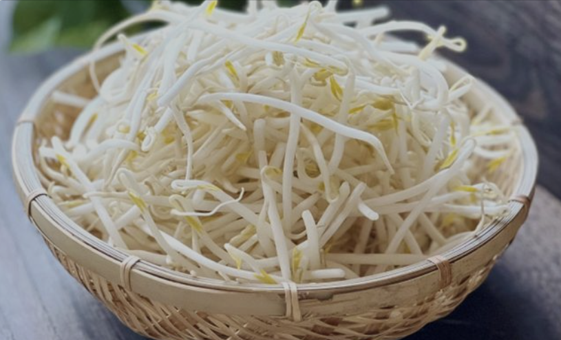
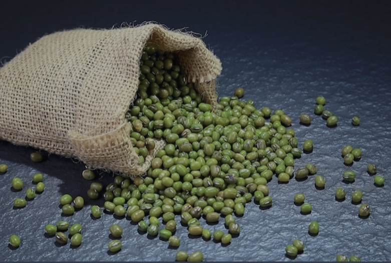

G5 การศึกษาชนิดของน้ําที่มีผลต่อการเจริญเติบโตของถั่วงอก
จัดทําโดย
1. เด็กชาย ปณิธาน ตระกูลรัตนมัจฉา เลขที่ 3 ม.2.7
2. เด็กชาย พสิษฐ์ สทุธิเจริญศักดิ์ เลขที่ 9 ม.2.7
3. เด็กชาย จิรัฎฐ์ เนาว์ชมภู เลขที่ 31 ม.2.7

1. ที่มาและความสําคัญของโครงงาน
เหตุผลที่เลือกทําโครงงานนี้เพราะต้องการศึกษาว่าเราสามารถนําน้ําต่างๆมาใช้แทนน้ําเปล่าได้หรือไม่ เพื่อพัฒนาเทคนิคการเกษตร ปัญหาในการทดลองคืองบประมาณในการซื้อน้ําชนิดต่างๆ
ขอบเขตการทําโครงงานครั้งนี้คือการนํานํา้ชนิดต่างๆมาปลูกต้นถั่วงอกทําให้เกิดประโยชน์อย่างเหมาะสมกับต้นถั่วงอก ประโยชน์ที่คาดว่าจะได้รับคือ สามารถนํานํ้าชนิดอื่นมาปลูกถั่วงอกแล้วทําให้ถั่วงอก เจริญเติบโตได้ดีที่สุด

6.1 วัสดุ อุปกรณ์ สารเคมี ที่ใช้ในการทดลอง
1) กระถาง
2) ดิน
3) เมล็ดถั่วเขียว
4) น้ําชนิดต่างๆ ( น้ําเปล่า, น้ําเกลือ, น้ําโค้ก, สปอนเซอร์, เฮบลูบอย )
6.2 วิธีการทดลอง
1) นําดินใส่กระถาง
2) นําเมล็ดถั่วเขียวมาปลูก
3) ใช้น้ําชนิดต่างๆในการรดวันละ 2 ครั้งเป็นเวลา 5 วัน
4) บันทึกผลการทดลอง
6.3 การวิเคราะห์ข้อมูล
| วันที่/น้ํา |
น้ําเปล่า |
น้ําเกลือ |
น้ําโค้ก |
สปอนเซอร์ |
เฮบลูบอย |
| 1 |
|
|
|
|
|
| 2 |
|
|
|
|
|
| 3 |
|
|
|
|
|
| 4 |
|
|
|
|
|
| 5 |
|
|
|
|
|
https://www.sgethai.com/article/ถั่วงอก-วิธีปลูกถั่วงอก%2F
(รู้ประโยชน์ ถั่วงอก พร้อมบอก 7 วิธีเพาะถั่วงอกแบบง่าย ๆ - SGEThai)